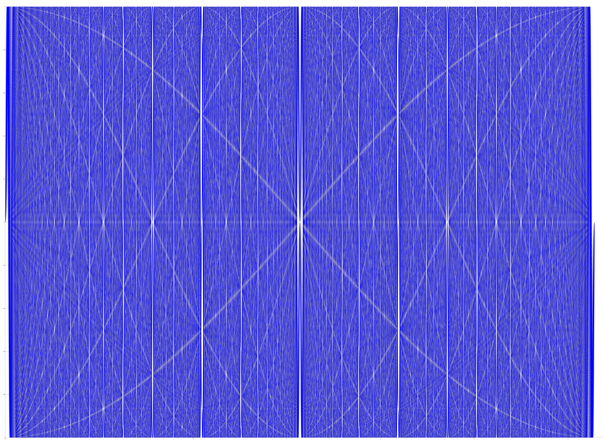

The blue lines are the sine curves. The white (non-vertical) lines are the apparent cosine curves. The y limits are [-1,1] and the x limits are [0,2pi]. Here the sin functions plotted are $$\sin(fx): x \in [0,2\pi], f \in {1,2,...50}$$

I don't understand why this happens. Here is a link describing it further.